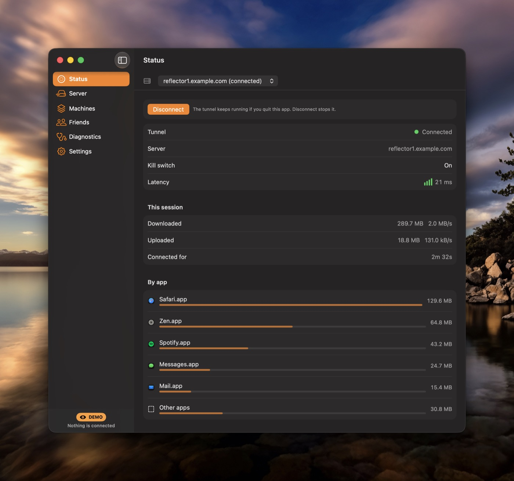
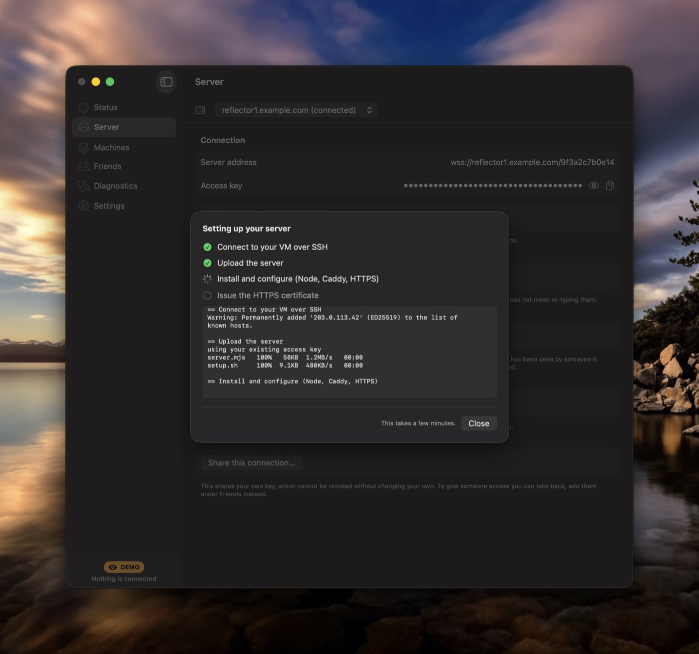
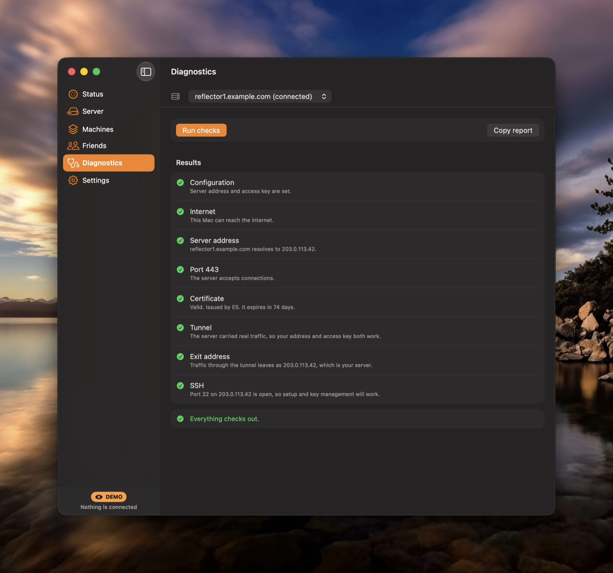
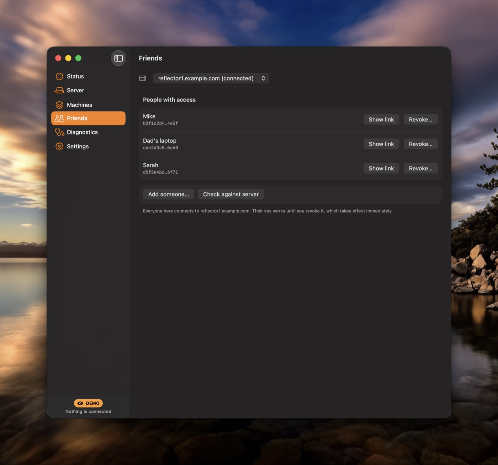

Collateral stands up a stealth proxy on your own free cloud VM and routes your whole machine through it, from your terminal, in about two minutes.
npx getcollateral
The usual ways out of a locked-down network share one flaw: something in the middle that everyone else is on too.
Thousands of people behind one endpoint. Easy to fingerprint, easy to block, and they log your traffic anyway.
A monthly bill to route your packets through a stranger’s server, and it gets blocked all the same.
Your server. Your IP. Your traffic. No shared endpoint, no one in the middle. Nothing common to log or ban.
An Oracle Cloud Always-Free ARM instance, free forever. Open ports 80 + 443 once in its console.
Enter the IP, SSH user, and key path. It SSHes in and sets up the proxy, HTTPS, firewall, and a background service, automatically.
Toggle device-wide and your whole machine exits through your own server, looking like ordinary HTTPS the entire way.
Not a shared VPN thousands of people sit behind, blocked and logged. Your own server, your own IP. Nothing common to fingerprint or ban.
VLESS over WebSocket over TLS on :443. On the wire it’s a normal request to a website; an active probe just gets an innocuous decoy page.
Point it at a fresh Linux VM. It installs everything (proxy, auto-HTTPS via Caddy + Let’s Encrypt, firewall, a service) and connects. Like Outline Manager, but stealthier and free.
Runs on an Oracle Cloud Always-Free ARM VM. No subscription, no metering, no card on file.
A VPN-style TUN captures everything: TCP and UDP. QUIC / HTTP-3 and games like Roblox, not just browser tabs.
Optionally point a domain you own at the VM. Your endpoint looks like an ordinary personal site, with no shared *.sslip.io pattern to block wholesale.
Collateral for Mac is a native app: a menu bar toggle, a real window, and a system network extension that carries every app on the machine. It builds the server for you over SSH, hands out and revokes keys for friends, and tells you which part is broken when something is. The terminal app stays free and open source; this is for people who would rather click.




A system network extension, so TCP and UDP both go through it. A kill switch stops traffic leaking if the tunnel drops.
Set up a new VM, keep several and switch between them, rotate a key everywhere at once, and hand friends their own key you can revoke later.
Diagnostics test each hop on its own, and the status never claims to be connected when nothing can get through.
Free for 7 days, no card and no account. One purchase covers unlimited Macs and every future version.
Every byte leaves your machine as VLESS wrapped in WebSocket wrapped in TLS, on port 443, the same envelope as any HTTPS page load. There’s no signature to match and no handshake that stands out, so a network filter sees a visit to a website and waves it through. An active probe that knocks on the door gets exactly what it expects: an innocuous decoy page.
Prefer to read the source first? Clone it from the repo and run npm start. It’s one more place the download can’t easily be blocked.